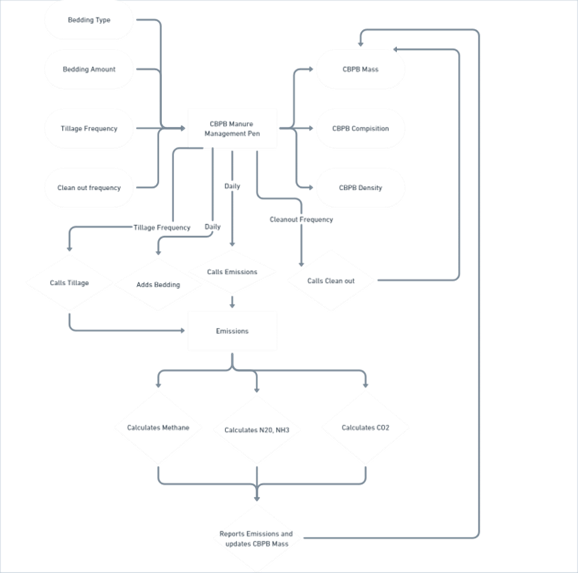
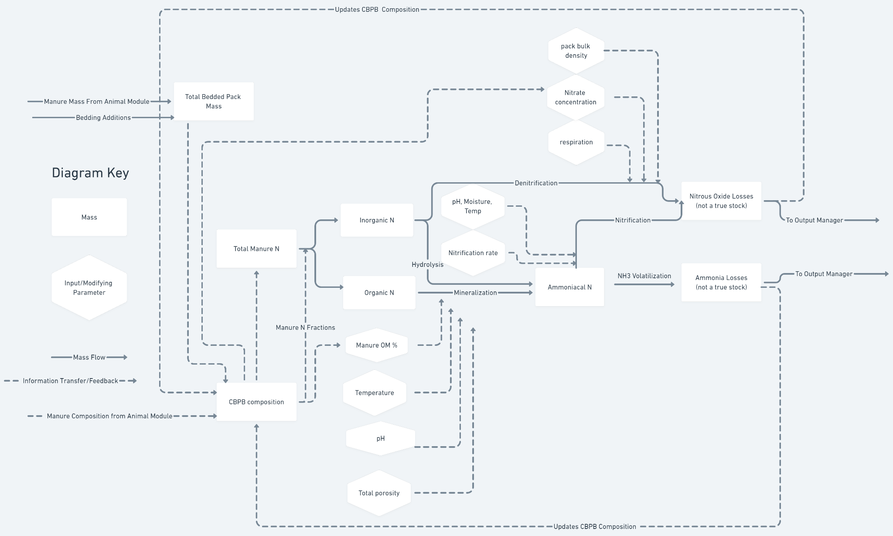

Compost bedded pack barn (CBPB)
Compost bedded pack barn (CBPB)
Authors: Varma VS
Created on: 08, May 2023
Last edited: 02, June 2023
Reviewed by: Loi Phan, Kristan Reed
Last reviewed:
Status: Draft (R1)
Overview
○ CBPB (Compost Bedded Pack Barn) is an alternative loose housing system for dairy cows. CBPB offers good comfort for lactating, dry and special needs cows. CBPB is also a manure management system that involves the addition of organic bedding material to animal pens regularly and manure mixture can be tilled to facilitate composting processes. The bedding material is added on top of the existing manure to maintain a dry and clean environment for the animals.
○ The primary objective of CBPB is to create a well-aerated and composting bedding pack within the barn. The composting process helps in the decomposition of organic matter, including the manure and bedding materials, which leads to the production of heat and microbial activity. This composting activity contributes to the breakdown of organic components and the reduction of moisture content, resulting in a drier and more stable bedding pack.
○ The composted manure from the CBP in the pens is cleaned out infrequently; when it does get cleaned out it is further managed in two ways: the composted manure can be moved to a composting facility for further storage and composting or it can be land applied. In this module we assume the final manure pack is land applied. (In future once we have the composting treatment method implemented, we will update two options of managing the manure pack)
Context
Traditional dairy housing systems often involve concrete flooring and limited bedding, which can lead to cow discomfort, suboptimal health, and laborious manure management etc. CBPB aims to address these issues by providing a soft, comfortable, and dry bedding surface for the cows, enhancing their comfort and overall well-being. These barns may also reduce manure storage costs and space, and save in labor and manure handling. CBPB can have significant effects on nutrient dynamics and gas
1
Compost bedded pack barn (CBPB)
emissions, and various mitigation strategies can be implemented to minimize their environmental impacts.
CBPB can be modeled using the IFSM and the Daycent model. These models utilizeprocess-based interactions to capture the dynamics of the system. While the IFSM and Daycent models are valuable tools for simulating CBPB and assessing their performance and environmental impacts, they do have certain limitations. These include limited user flexibility in understanding/changing their structure, inputs, and parameters.
Requirements
A. CBPB should start with acquiring the following information from animal module and pen class:
a.
b.
c.
d.
e.
|
Pen ID and simulation days
Housing type (CBPB)
Number of animals
Animal types (calf, Heifers,
lactating and dry cows)
Manure information (Manure
Mass (kg), Total Solids
(kg), Volatile Solids (kg),
Urea
|
|---|---|
concentration (gram/L), Urine (kg), Urine TAN (kg), Manure TAN (kg), Urine N (kg), Fecal Nitrogen (kg), Inorganic Phosphorus Fraction, Organic Phosphorus Fraction, Phosphorus (kg), Potassium (kg), Enteric Methane (kg))
The manure pens should accept the bedding, tillage and weather information. |
|||
|---|---|---|---|
Bedding type (sawdust, manure solids, straw) |
|||
(kg/animal/day) |
|||
Tillage activity (unitless, turning activity each day) |
|||
Temperature (oC) |
|||
The above information is collected and used to calculate the manure composition and |
management each day, as follows.
a. Total manure mass (kg)b. Density of the manure pack (kg/m3)c. Ambient temperature (T,oC) and manure pack temperature (Tbp,oC)D. Based on the compost bedding mass, composition, and temperature, the routine should calculate: (explained in proposed solution)a. Loss of mass/ dry matter through CH4 and CO2 emissions (kg/day)b. Loss of nitrogen through ammonia emissions (kg/day)c. Loss of nitrogen through nitrous oxide emissions (kg/day)The following metrics that describe the mass and composition of the compost-bedding material E.need to be calculated and updated each day based on additions from the bedding and animal manure and losses to emissions:
|
Dry matter
composition ( kg
dry matter/ kg
total mass)
Moisture
composition (kg
moisture(aka
water)/kg total
mass)
|
|
|---|---|---|
Note this is equal to the non dry matter fraction |
||
Total Nitrogen
(kg N /kg dry
matter)
Organic Nitrogen
(kg organic N/kg
N)
|
2
Compost bedded pack barn (CBPB)
i. Organic N originates from fecal nitrogen so the initial composition can be found
from fecal N/total manure N
Existing solution
There is no CBPB method in RuFaS at this time
Proposed solution
The input information and the treatment method should work as follow:
❖ The manure method checks if the treatment scenario for a pen is denoted as CBPB. Then the
CBPB routine accesses the animal module and pen class for the animal and manure information.➢ It should collect the information related to animal type, number of animals, manure
characteristics listed in the requirements.
❖ CBPB then accesses the bedding configuration to calculate the amount of bedding assigned to
each animal type and the total mass needed.
➢ Example calculations can be found in Bedding calculations.
❖ Based on the compost bedding mass, composition, and temperature, the routine should
calculate the following:➢ Loss of mass/ dry matter through CH4 and CO2 emissions➢ Refer to section A and E - Methane and Carbon decomposition ➢ Loss of nitrogen through nitrous oxide emissions■ Refer to section B - Nitrous Oxide Emission➢ Loss of nitrogen through ammonia emissions■ Refer to section C - ammonia EmissionThe following metrics that describe the mass and composition of the compost-bedding material need to
be calculated and updated each day based on additions from the bedding and animal manure and losses
to emissions:
➢ The dry matter (kg).
3
Compost bedded pack barn (CBPB)
The daily dry matter available is calculated from the C losses from methane and Carbon.
“DMloss”:To calculate the dry matter loss from compost as (CH4 and C) loss. This is done by two steps: (i) methane loss from Volatile solids (kg/day) and (ii) Carbon decomposition (kg/day)➢ Mass of phosphorus (kg).
The equation for updating the compost composition specifically for phosphorus (P) can be expressed as follows:Compost Composition (next day, P) = Compost Composition (current day, P) + Incoming Phosphorus - (Phosphorus Losses)➢ Pool of phosphorus (kg).Water extractable inorganics is 50% of the total P (kg)Water extractable organic P is 5% of the total P (kg)Non-water extractable inorganic P = 11.25% of the total P (kg)Non-water extractable organic P = 33.75% of the total P (kg)Mass of nitrogen (kg).
Example calculations can be found in Section 7- Testing and Monitoring: D -Test the gas emissions and manure pack nutrient dynamics.
➢ Fraction of Inorganic Nitrogen that is ammonium“ammonium fraction in inorganic nitrogen”: 0.3The “ammonium fraction in inorganic nitrogen” refers to the proportion or percentage of inorganic nitrogen that is available in the form of ammonium.➢ Fraction of Nitrogen that is organic N“organic nitrogen fraction in nitrogen mass”: 0.4The “organic nitrogen fraction in nitrogen mass” refers to the proportion or percentage of nitrogen that is available as an organic form.➢ Fraction of Nitrogen that is inorganic N“inorganic nitrogen fraction in nitrogen mass”: 0.6The “inorganic nitrogen fraction in nitrogen mass” refers to the proportion or percentage of nitrogen that is available as an inorganic form➢ Mass of potassium (kg).
The equation for updating the compost composition specifically for potassium (K) can be expressed as follows:
4
Compost bedded pack barn (CBPB)
Compost Composition (next day, K) = Compost Composition (current day, K) + Incoming Potassium - Potassium Losses.
The compost bedded pack barn (CBPB) object structure is shown in the diagram below. Themanure_management JSON file is used to pass information about the CBPB manure management method to the manure management module. Manure management practices are assigned to a pen in the animal json file (i.e. animal_managment_animal.json). If the CBPB manure management method is assigned to a pen, the CBPB class will be initialized in manure_treatment_cbpb.py with the inputs provided in the relevant json files.
{kind=link}

Methane emissions
5
Compost bedded pack barn (CBPB)
{kind=link}

6
Compost bedded pack barn (CBPB)
7. Testing and MonitoringA. Test whether the pen class provides the animal type, number of animals, and the manure information.B. Test the animal space requirements, bedding added according to the animal type and number of animals within the pen.
i. For example, if the animal type is a cow and the bedding Requirement per animal is 12 kg, then the number of Cows in the pen is 1000. To calculate the total bedding required: multiply the bedding requirement per animal by the number of animals: 12 kg * 1000 cows = 12,000 kg. So, the total bedding required would be 12,000 kg.
Test the dry matter loss and the corresponding manure pack volume. |
||
|---|---|---|
For example, starting day 1 to day 180 if the total manure (manure and bedding |
material) dry solids in the pack is 1000 kg . After composting (180 days), there is a 20% dry matter loss. Therefore, the amount of composted manure on Day 180 would be 800 kg (1000 kg - 20%).
ii. To calculate the corresponding manure pack volume: Determine the remaining solids after the dry matter loss: 800 kg. Account for the moisture content: If, for example, the moisture content is 60%, then the dry solids would be 40% of the remaining solids: 800 kg / 0.6 = 1333 kg (total manure). Convert the remaining manure to volume based on the density or compaction of the composted manure: If, for example, the density is 450 kg/m3, then the corresponding manure pack volume would be 1333 kg / 450 kg/m3= 2.96 m3.
Test the gas emissions and manure pack nutrient dynamics.
For example, If the daily nitrogen (N) loss due to ammonia N and nitrous oxide N is= 0.05 kg, and the total daily N input is 0.5 kg, we can calculate the remaining N loss as follows:Remaining N loss = Total daily N input - N loss due to ammonia N - N loss due to nitrous oxide NRemaining N loss = 0.5 kg/day - 0.05 kg - 0.05 kgRemaining N loss = 0.4 kg/dayTherefore, the remaining N loss, excluding the losses from ammonia N and nitrous oxide N, is 0.4 kg/day.
E. Test the pack clean out that removes manure mass from the pen, whenever there is a request from the crop and soil module (Example calculations in Manure Field connector document).
7
Compost bedded pack barn (CBPB)
Cross-Team Impact
The output generated by the CBPB will be accessed and used by the Crop and Soil module for land application. The Crop and Soil module will rely on the information and data provided by the CBPB module to provide the composition of manure used for amendment
Inputs
Input Type 1- Manure_management.json:
Section 1: manure_management_scenarios section:
Add the following configuration parameters:{“scenario_id”: <a unique id>,“bedding_type”: “sawdust”,“manure_handler”: “tillage”,“manure_separator”: “none”,“manure_treatment”: “compost bedded pack barn”}Explanation:
“scenario_id”: <a unique id>This refers to the manure treatment scenario that is assigned.“bedding type”: “sawdust”Default: SawdustThis refers to the material used as bedding for the animals in the barn. Common types of bedding include straw, sawdust, and compost. Please refer to bedding_configs section for the different bedding types and the values.“manure_handler”: “tillage”This refers to the process of physically tilling or agitating the manure material (compost pack) within the pen.To simulate the Composted Bedded Pack Barn (CBPB) system, the “manure_handler” input should include the process of tillage.
When simulating the CBPB system, it is necessary to include the “manure_handler” parameter with the value set to “tillage” to ensure that the tillage process is taken into account. This will help in identifying the number of times the tillage activity is performed and the related energy calculations for the EEE team.
8
Compost bedded pack barn (CBPB)
“manure_separator”: “none”No separator is considered.“manure_treatment”: “compost bedded pack barn”This refers to the process of managing and processing manure by composting process within the compost bedded pack barn (CBPB).Section 2: bedding_configs section:
Add the following configuration parameters:{“bedding_type”: “sawdust”,“bedding_mass_per_day”: 12“bedding_density”: 210.0,“bedding_dry_matter_content”: 1.0“Initial start up bedding”: 0}Explanation:
“bedding type”: “sawdust”The “bedding type” mentioned, “sawdust” indicates that sawdust is specifically used as the bedding material in a CBPB system. Straw and compost are also used in some occasions (refer to “bedding_mass_per_day” for the values).Note: To ensure accurate bedding type data collection, create user input for both bedding type and housing type, allowing users to specify the bedding type regardless of the housing type (e.g., freestall or CBPB). Since the bedding type (variable name is shared among different housing types), this way even if the sawdust is used in different housing types, based on the “freestall” or “CBPB”, we can acquire the input value for the bedding.
“bedding_mass_per_day”: 12This refers to the amount of new bedding added to the pack on a regular basis to maintain the desired depth and condition of the pack. The amount added will depend on factors such as the number and size of the animals, as well as the type of bedding being used:“sawdust” - (min, max, and default; 4.5, 12, and 12 kg/animal/d)“straw” - (min, max, and default; 4.5, 12, and 11.3 kg/animal/d)“compost” - (min, max, and default; 4.5, 12, and 11.3 kg/animal/d)“bedding_density”: 210
9
Compost bedded pack barn (CBPB)
This refers to the bedding density per unit of volume (kg/m^3).
“Initial start up bedding”: 0This refers to the amount and type of bedding used when starting the compost bedded pack barn, (kg).“bedding_dry_matter_content”: 1.0This refers to the dry matter content for bedding material, default set at 1.0.Section 3: manure_handler_configs section:
Add the following configuration parameters:{“manure_handler_type”: “tillage”,“daily_tillage_frequency”: 1}Explanation:
“manure_handler_type”: “tillage”This refers to the process of physically tilling or agitating the manure material (compost pack) within the pen.“daily_tillage_frequency”: 1This refers to the frequency of the activity to mix and aerate the organic material in the bedded pack, which helps to break down the material and create a more uniform bedding surface. The frequency of this process can vary depending on the farm practice (min, max; 1, 3; times/day).Section 4: manure_treatment_configs section:
Add the following configuration parameters:{“total_solids_loss”:“nitrogen_loss_emissions”:“total_ammoniacal_nitrogen_loss_emissions”:“phosphorus_removal_efficiency_for_treatment”: 0.0“potassium_removal_efficiency_for_treatment”: 0.0}Explanation:
“total_solids_loss”:
10
Compost bedded pack barn (CBPB)
This refers to the degradation of total solids (dry matter) of the compost bedded pack during the composting process, over the storage time period .The daily dry matter is calculated from the C losses from methane and carbon emissions.
“phosphorus_removal_efficiency_for_treatment”: 0.0This refers to the percent of phosphorus loss during the process, over the storage time period (pack clean out) (min, max; 0, 10%).“potassium_removal_efficiency_for_treatment”: 0.0The potassium loss (in the form of ammonia, nitrous oxide) during the process,over the storage time period (pack clean out) (min, max; 0, 10%).“pH”:pH in the bulk of the manure, is calculated from equation [M.1.D.2]“Pack clean out”: 180This refers to the activity of removing the old bedding and manure from the pack to create fresh compost. This process can vary depending on the specific system being used (min, max; 90, 180; days).“moisture content after treatment”: 55This refers to the moisture content of the manure pack after the treatment, which normally is in the range of (min, max; 55, 65%). This is achieved by dividing the final dry weight(total solids) by the moisture content.Input type 2: Inputs from animal module
These inputs are passed from animal module to manure module.
Data type 1: Pen data:
The “Pen data” refers to a dataset or information source that contains details about the type of animals and the corresponding number of animals present in the facility.
“Animal Type”:The specific type of animals housed in the compost bedded pack barn, such as calf, heifers, lactating cow, and dry cow.“Number of Animals”:The total number of animals present in the barn.“Animal spacing”: 5
11
Compost bedded pack barn (CBPB)
This refers to the amount of space provided per animal in the barn.
Defaults are 5 m2/cow and 3 m2/growing animal (m2).
The exact number will be determined based on the current animal composition in the pen.
Data type 2: Manure excretion values calculated daily for each animal:
The manure characteristics are collected from the animal module.
“Total Manure”:The total amount of manure produced by all animals in the barn, typically measured in mass (kg)“Total Solids”:The quantity of solids present in the manure (kg).“Degradable_Volatile_Solids” (kg):The quantity of volatile solids in the manure that are biodegradable (kg).“Non_Degradable_Volatile_Solids”:The quantity of volatile solids in the manure that are non-biodegradable and do not readily decompose (kg).“Nitrogen”:The quantity of nitrogen in the manure (kg).“Phosphorous”:The quantity of phosphorus in the manure (kg).“Potassium”:The quantity of potassium in the manure (kg).“Urea”:The concentration of urea in the urine (g/L). Also referred to “Cu” - Ammonia gas emissions section“Urine”:The total amount of urine produced by all animals in the barn (kg).“Urine_Total_Ammoniacal_Nitrogen”:The total amount of ammoniacal nitrogen present in the urine (kg).“Manure_Total_Ammoniacal_Nitrogen” (kg):The total amount of ammoniacal nitrogen present in the manure (kg).
12
Compost bedded pack barn (CBPB)
“Urine_Nitrogen” (kg):
The amount of nitrogen contained in the urine (kg).
“Inorganic_Phosphorus_Fraction”:
The proportion or fraction of inorganic phosphorus present in the manure.
“Organic_Phosphorus_Fraction”:
The proportion or fraction of organic phosphorus present in the manure.
“Phosphorus_Fraction”:
The proportion or fraction of phosphorus present in the manure.
Input Type 3: Weather data:For compost barns, temperature at the surface of the bedded pack is similar to ambient air temperature.“Daily Average Temperature”:
The daily average temperature (oC).
“Daily Precipitation”:
The daily precipitation (mm/day).
Input Type 4: CBPB-related manure constants:These constants will be stored in manure_constants.py“Manure pack density”: 650
The initial density of manure and bedding in a compost bedded pack barn is in the range of (min,
max: 600 , 800; default - 650) kg/m3each day before the process.
“Bedded Pack Density”: 350
This refers to the mass per unit volume of the compost pack after the solids loss (kg/m3)(min,
max; 350, 450)
“Absorbance capacity”:
The property “Absorbance capacity” refers to the ability of different types of materials (sand,
sawdust, straw, chopped straw) to absorb water. It is measured in terms of the ratio of kilograms of
water absorbed per kilogram of material (kg H2O/kg). The absorbance capacity values provided for each
material are as follows:
“Sand”: 4.22 kg H2O/kg
“Sawdust”: 0.27 kg H2O/kg
13
Compost bedded pack barn (CBPB)
“Straw”: 2.63 kg H2O/kg
“Chopped straw”: 2.85 kg H2O/kg
The value will be selected based on the bedding type added to the barn.
Input type 5: CBPB-related gas emission constants:
The link below leads to an external file that contains a table detailing the variable names, their
corresponding definitions, and any constant values associated with the parameters of the Compost
Bedded Pack Barn.
These constants will be stored in gas_emission_constants.py
“C/N” ratio is set at 15.
“Bo” = maximum CH4 producing capacity for dairy manure, 0.24 m3CH4/kg VS Methane unit conversion factor = 0.67, conversion factor of m3CH4 to kg CH4
fnitrified_N_lost_to_N2O = 0.02 g N/g N2O, fraction of nitrified N lost as N2O.
“FN, conv”= 15.7, nitrification conversion factor, (kg N2O/ ha. day) / (g N / m2. day)“Ffraction soil nitrified”= 2.67 x 10-4, maximum fraction of ammonium concentration in the soil nitrified.“Ftemp”= 0.1, factor for the effect of temperature, dimensionless“Fwfp”= 0.6, factor for the effect of soil moisture, dimensionless“Fph”= 1, factor for the effect of soil pH, dimensionless“FN,mass” = 0.157 (kg N2O/ha-day) /(µg N/cm2-day) unit conversion factor.“fa” = 0.45, air‐filled porosity, fraction“PO” = 0.1005, porosity, fraction.“Fr,WFPS = 0.65.
“Decomp_effect_rate_manure”:
14
Compost bedded pack barn (CBPB)
The effectiveness of the decomposition rate of manure, dimensionless.
Manure - 1.35 x 10-3
“Decomp_effect_rate_bedding”:
The effectiveness of the decomposition rate of bedding, dimensionless.
Bedding - 3.58 x 10-4
Bedding - 3.58 x 10-4
“Kmax-nitrification of ammonium” = 2.67 * 10-4, maximum fraction of ammonium concentration in the compost nitrified.
dcompost = 33.4 cm, active compost depth of layer simulated (default) “ρdensity”= 1.25 g/cm3, bulk density of the compost.
“Tbp”= 30oC, bedded pack temperature.
“T”= temperature, K (Use the Tbp value for T here, by converting it to K and use it in equation [M.1.C.3 and M.1.C.5] and elsewhere T applicable)“U” = 0.028, air friction velocity near surface, m/s“Va “= 2 m/s, ambient air velocity measured at standard anemometer height of 10 m.“SC”= 0.57 (related to equation - M.C.1.4)“Rs”= 3 × 105s/m, resistance to mass transfer through the manure.The effective resistance of the manure is a function of manure type with assigned values of 3 × 105s/m for solid.
“Rc “= 2 ×105s/m, resistance to mass transfer through a storage cover.
The resistance for covered manure storages is 2 ×105s/m.
“Ca” = 0, concentration of ammonia in ambient air, kg/m3“pHf”= 8.0, surface pH of fresh manure.“pHn”= 7.5, surface pH of non-fresh manure.
“Kf”= 10.0 L/kg, reference linear partitioning coefficient for ammonium adsorption (Waldrip et al., 2012)
15
Compost bedded pack barn (CBPB)
“OM”= 0.38, organic matter content of the manure pack, fraction.
“Fclay”= 0.06, clay content of the manure pack, fraction.
“OMref”= 0.70, organic matter.
“WFP” = 0.6, manure pack water-filled pores space“ρs,avg”= 1.25 g/cm3, average density of the whole manure pack layer.“FINES” = 0.19FINES is calculated from clay and silt contents of the manure pack layer, 6 and 32%, respectively. Average of clay and silt contents, fraction (default set at 6 and 32%,) “fsur”= 0.4, porosity of the surface, fraction“fmp”= 0.1005, porosity of the manure pack, fraction“γ” = 0.1, slope of the logarithmic tension-moisture curve“Fabs,max”= 0.50, maximum fraction of urine that can be absorbed.“Csur”= 30.4 * 10-3kg/m3“Cair”= 12.8 * 10-3kg/m3“SCwater”= 7, Schmidt number (dimensionless) default value“Ftemp”= factor for the effect of temperature, (dimensionless, 0.0 to 1.0)“FpH”= factor for the effect of compost pH, (dimensionless, 0.0 to 1.0)“Wwfps”= 65%, water filled pore space, percent“MC” = 2, water content of the manure pack, cm H2O/cm compostThe formula for calculating moisture content is as follows:Moisture Content (cm H2O/cm compost) = Water Content of Manure Pack (cm H2O) / compost Depth (cm)For example, if the water content of the manure pack is 10 cm H2O and the soil depth is 5 cm, the moisture content would be:Moisture Content = 10 cm H2O / 5 cm = 2 cm H2O/cm compost
16
Compost bedded pack barn (CBPB)
The open lot soil profile is modeled in four layers, with the first 3 upper layers of 3.0 (surface), 4.5 and 7.5 cm depths representing the manure pack and a fourth layer with a 100 cm depth representing the underlying soil layer.
“D” = depth of the manure pack, 5 cm“Cdry” = 0.50, carbon content of the dry matter (total solids)Outputs
“Manure Mass”:This refers to the wet mass. The mass can be (kg/d).“Total dry mass”:This refers to the dry mass of compost (kg/d).“Mass of Nitrogen”:This refers to the mass of nitrogen in the compost pack (kg/d).“Mass of Phosphorus”:This refers to the phosphorus content in the compost pack (kg/d).“Mass of Potassium”:This refers to the potassium content in the compost pack (kg/d).“Organic phosphorus fraction”:The “Organic phosphorus fraction” refers to the proportion or percentage of phosphorus that is present in an organic form.“Inorganic phosphorus fraction”:The “Inorganic phosphorus fraction” refers to the proportion or percentage of phosphorus that is present in an In-organic form.“inorganic nitrogen fraction in nitrogen mass”:The “inorganic nitrogen fraction in nitrogen mass” refers to the proportion or percentage of nitrogen that is available as an inorganic form“organic nitrogen fraction in nitrogen mass”:The “organic nitrogen fraction in nitrogen mass” refers to the proportion or percentage of nitrogen that is available as an organic form.
17
Compost bedded pack barn (CBPB)
“ammonium fraction in inorganic nitrogen”:
The “ammonium fraction in inorganic nitrogen” refers to the proportion or percentage of
inorganic nitrogen that is available in the form of ammonium
Existing outputs: (grouped to a pool - output manager)
“Methane emissions”:
This parameter refers to the total amount of methane emissions (in terms of total gas) from CBPB on a daily basis (kg/d). (Equations [M.1.A.1] to [M.1.A.2])
“CO2 emissions””This parameter refers to the total amount of Carbon CO2 emissions from CBPB on a daily basis (kg/d).“Nitrous Oxide emissions”:This parameter refers to the total amount of nitrous oxide (in terms of total gas) emitted from the CBPB on a daily basis (N2O-Nitrogen kg/d). (Equations [M.1.B.1] to [M.1.B.15])“Ammonia emissions”:This parameter represents the total amount of ammonia (in terms of total gas) emitted from the CBPB on a daily basis (ammonia N kg/d). Simulation of ammonia emissions is done on an hourly time step and the daily emission is obtained by summing hourly emissions within the day. (Equations [M.1.C.1][M.1.C.24])“Total_Nitrogen_loss”:This refers to the nitrogen loss (in the form of ammonia, nitrous oxide) during the process. Daily loss of ammonia and nitrous oxide is determined from the cumulative loss up to a given date (pack clean out). By summing daily emissions over the storage time period (pack clean out), the loss is determined.Input data collection and processing
The below sections describes the initial collection of inputs from the input sources and preliminary processing and calculations that are required before the CBPB composition change and emission processes can be calculated
18
Compost bedded pack barn (CBPB)
Handler (tillage) calculations
Bedding calculations
“daily_bedding_addition_pen’”:Amount of bedding added each day with respect to the number of animals in the barn (kg/d). Calculated by multiplying the number of animals by the average bedding mass per animal.daily_bedding_addition_pens = Nanimals × Beddingmass per animal
Where,
Nanimals= number of animals,Beddingmass per animal = bedding mass per animal per day, kgTreatment (CBPB) calculations
“Total volatile solids”:The sum of degradable and non-degradable volatile solids, during the start of each day, over the storage time period, kg/d.“daily_wet_matter_additions”:This refers to the amount of manure and bedding added to the barn (wet weight basis) (kg/d).daily_wet_matter_additions = Total manure mass + Total bedding mass
Where,Total manure mass = the amount of manure produced by the animals in the barn (kg/d) Total bedding mass = the amount of bedding material used in the barn (kg/d)“daily_dry_matter_additions”:This refers to the sum of total dry matter solids from the manure and bedding added at the start of each day, over the storage time period, kg/d.“dry matter content of total compost material”:It is expressed as a percentage and represents the proportion of dry matter (solid material) within the total weight of the “Total_compost_material”, %.“Daily pack volume”:
19
Compost bedded pack barn (CBPB)
The initial daily pack volume before treatment can be calculated by multiplying the “Total manure generated” i.e daily_wet_matter_additions by the manure pack density. The equation is as follows:
Daily pack volume = daily_wet_matter_additions × Manure pack density
“pack volume after solids loss”:This refers to the volume of the manure pack after the solids loss (loss of dry solids) m3. This is achieved by subtracting “pack volume after solids loss” from the “Daily pack volume”.“pack volume” = Daily pack volume − Treated pack volume
The “pack volume after solids loss” is calculated by multiplying the “wet mass after solid loss” by the “bedded pack density”. Wet mass of the manure pack after solid loss is achieved by: The remaining total solids multiplied with the final moisture content (moisture content after treatment from Section 4: manure_treatment_configs section) of the manure pack.
Treated pack volume = wet mass × Bedded pack density
“nitrogen_loss_emissions”:Calculated from the ammonia and nitrous oxide loss.“total_ammoniacal_nitrogen_loss_emissions”:Calculated from the TAN loss.“NNH4”= ammonium concentration in the compost, g N/m2-dayThe value of NNH4, which represents the ammonium concentration in the compost (in g N/m2-day), can be obtained by calculating the total ammonium concentration based on the number of animals and the specified area.To calculate NNH4, you would need the following information:Total ammonium production: The total amount of ammonium produced by the animals in a given period.We have the area of the compost bedded pack (CBPB) where the animals are housed.
Once we have these values, we can calculate NNH4using the formula:
NNH4 = Total ammonium production / Compost area
This calculation will give us the ammonium concentration in the compost per unit area per day.
Nitrate to carbon dioxide ratio”r” = ratio NNO3 to CCO2,
20
Compost bedded pack barn (CBPB)
The values for NNO3 to CCO2 are available from theModel Assumptions and Parameter calculations section. Please convert theCCO2, from μg C/g to g C/g compost before performing the ratio calculations.
r = NNO3 / CCO2 (g N/g C)
“urea_conc”= urea concentration in urine, kg/m3(obtained from the animal module)
“CTAN”= concentration of TAN in the manure solution, kg/m3
We get the concentration of TAN (Total Ammonia Nitrogen) in the manure solution from the animal module (g/L)To convert the concentration from grams per liter (g/L) to kilograms per cubic meter (kg/m³), use the below calculations.CTAN = CTAN_I* grams_to_kg / liters_to_cubic_meters
“Bedded Pack Surface Area” = surface area of the bedded pack, m2Available from “Animal spacing” - Data type 1: Pen data, total number of animals in the barn (wrt to animal type) multiplied by the respective animal space area.Area = Total Number of Animals * Animal Space Area
“Organic N”= organic N in storage is the fecal N, kgNo = fecal N, kgThe fecal N is available from the animal module - Manure information.We have the total nitrogen (kg/d) calculated. As a general estimate, the organic nitrogen fraction in dairy manure is often reported to be around 40-70% of the total nitrogen content.
Calculations as following:
“ha to m2”:Area (ha) = Area in square meters (m²) / 10,000.For example, total area of animals occupied in CBPB is 500 m2, thenArea (ha) = 500/10000= 0.05 ha“Vmax”= maximum rate of urea conversion, kg N/m3wet feces-h (substitute the temperature, K value to solve the below equation and use the corresponding value in equation [M.1.C.1]) (In the given context, the “K” value represents the temperature in Kelvin (K) units. Use the compost bedded pack temperature Tbp)
21
Compost bedded pack barn (CBPB)
= 3.915 × 109 e-6463/T
“Kmc”= Michaelis-Menten coefficient, kg N/m3mixture (substitute the temperature, K value to solve the below equation and use the corresponding value in equation [M.1.C.1]) (In the given context, the “K” value represents the temperature in Kelvin (K) units. Use the compost bedded pack temperature Tbp) = 3.371 × 108 e(-5914/T)
Model Assumptions and Parameter calculations:
This section contains the variables and parameters that need review.
“PO” = 0.1005, porosity, fractionPorosity fraction (PO) = (Particle density - Bulk density) / Particle densityParticle density = 1.89 g/cm3Bulk density = 1.7 g/cm3PO = 0.1005, will be used from the gas emissions constants section. (Note: also referred to the total porosity, f)“fa”= 0.45, air-filled porosity, fraction (cm3cm-3)The POair (air-filled porosity also referred as fa) is [STRIKEOUT:initially] set to 0.45 as default, which is approximated from gas pore space measurements by Ayadi et al. (2015) for simulated bedded packs.“WFP”= 0.65, manure pack water-filled pores space, fraction
“Wwfps” = 65%, water filled pore space, percentLinn, D. M., & Doran, J. W. (1984). Effect of water-filled pore space on carbon dioxide and nitrous oxide production in tilled and non-tilled soils. Soil Science Society of America Journal, 48(6), 1267-1272. Table 1 from the above paper - cross reference from IFSM.“NNO3” is the nitrate concentration in the compost (g N g-1compost)
On average, the nitrate fraction in nitrogen in compost typically ranges from 5% to 30%, we are assuming 10% (since we do not have the value for that).
To calculate NNO3, we would need the following information:The total nitrogen (TN) in the compost material (kg). Once we have the value, we can calculate NNO3 using the formula:“NNO3”= 0.1 * Total Nitrogen / Total dry mass (total solids) of the compost
And the final output is expressed as g N g-1compost.
22
Compost bedded pack barn (CBPB)
“CCO2”= 7,000 carbon dioxide flux, μg C/g compostThe total CO2 emission factors were estimated to be 10 g kg-1compost, and 7 g kg-1compost. Considering, 7 g C/kg compost is equal to 7,000 μg C/g compost.(Silver, W. L., Vergara, S. E., & Mayer, A. (2018). Carbon sequestration and greenhouse gas mitigation potential of composting and soil amendments on California’s rangelands. California Natural Resources Agency, 62).
“U” = 0.028, air friction velocity near surface, m/s
= 0.02 * Va 1.5 (related to equation - M.1.C.4)1.5= 0.5 * 0.02 * Va“Va”= ambient air velocity measured at standard anemometer height of 10 m (related to equation -M.1.C.4)
Va = 2 m/s (considering a default value)
Va= ambient air velocity for compost barns from literature range (1.6 to 3.2 m/s).
IFSM reported - Effective air velocity is set to ambient air velocity for open conditions, half the ambient air velocity when a roof is used, and 0 m/s (i.e., no surface evaporation)with a cover.Since, CBPB is roofed we consider half the ambient air velocity.
“SC”= 0.57, Schmidt number (Perry et al., 1997), dimensionless (related to equation - M.C.1.4)
Gualtieri, Carlo, Athanasios Angeloudis, Fabian Bombardelli, Sanjeev Jha, and Thorsten Stoesser. “On the values for the turbulent Schmidt number in environmental flows.” Fluids 2, no. 2 (2017): 17. Table 1. Values of the Schmidt number for different substances in air and water. Schmidt number for NH3 = 0.57
“Csur”= 30.4 * 10-3kg/m3Considering the Tbp – temperature of the bedded pack at 30oC (Referring from the table- External CBPB document, to be reviewed)“Cair”= 12.8 * 10-3kg/m3Considering average barn ambient temperature 12.8oC (Referring from the table -External CBPB document, to be reviewed)
23
Compost bedded pack barn (CBPB)
Gas Emissions
A. MethaneCurrently, we use the methane gas emission equation provided by the Intergovernmental Panel on Climate Change (IPCC), which is also referred to in IFSM.Methane Calculation: IFSM (IPCC)
When manure is allowed to accumulate into a bedded pack, CH4 emissions are produced. For this management option, an adaptation of the tier 2 approach of the IPCC (2006) is used. Emission on a given day is determined as a function of the ambient barn temperature and a methane conversion factor (MCF).
image:: vertopal_e4f80e0dc67749f6 89523bc44aca1003/media/image4.png
|
[M.1.A.1] |
|---|---|
where,ECH4,floor = daily CH4 emissions from the floor, kg CH4/dayVS = volatile solids excreted in manure, kg VS/day (Please refer to “total volatile solids” fromthe “Treatment CBPB calculations” section)MCF = CH4 conversion factor for the manure management system, %.MCF is modeled as an exponential function of ambient barn temperature through a regression of the data provided by the IPCC (2006):
whereTb = ambient barn temperature,oC (Value obtained from - “Daily Average Temperature”, weather data)
Nitrous Oxide Emission
To estimate total N2O emissions ( kg N2O/day), we need the toal area of the pen and then substitute that value in kg N2O/ha-day to get the total kg N2O emissions/day. Example calculation as below:
For example, let’s say the N2O emissions rate is 2 kg N2O/ha-day and the total area of the pen is 0.5 hectares (m2to ha conversion can be found in MFC constants):
{kind=link}
24
Compost bedded pack barn (CBPB)
Total N2O emissions per day (kg N2O/day) = N2O emissions rate (kg N2O/ha-day) * Total area of the pen (ha)
Total N2O emissions = 1 kg N2O/day
Model routines developed for cropland and open lots (see Environmental Information, Nitrous oxide section - IFSM) are adapted to represent several N processes for CBPB.
In the IFSM (Integrated Farm System Model) with reference to N2O emissions, all variables are denoted as “soil” instead of “compost” where applicable. This means that when considering N2O emissions, the model specifically takes into account the composted materials rather than focusing on the soil alone.
Emission of N2O in units of kg/ ha from composts is predicted as the sum of nitrification and denitrification losses:
whereEN2O,compost = total emission of N2O from compost, kg N2O/ha-dayEN2O,compost,N = emission from compost due to nitrification, kg N2O/ha-day EN2O,compost,D = emission from compost due to denitrification, kg N2O/ha-dayNitrification emission
Nitrous oxide is a product of nitrification and denitrification processes in the compost bedded manure pack. Nitrification is an aerobic process that oxidizes NH4 + to NO3, with the production of NO and N2O as intermediates. Compost nitrification is influenced by various factors such as temperature,moisture, pH, nitrification rate, and ammonium concentration etc. The below equations are taken into account to calculate the emission during nitrification.
Emission from nitrification is predicted as:
{kind=link}
image:: vertopal_e4f80e0dc67749f6 89523bc44aca1003/media/image7.png
|
[M.1.B.2] |
|---|---|
where
RNO3 = compost nitrification rate, g N/m2day (RNO3 calculated using equation M.1.B.3)
25
Compost bedded pack barn (CBPB)
Compost nitrification rate
The Compost nitrification rate is influenced by NH4 + concentration, water content, temperature, and pH. By considering these factors, we can simulate the compost nitrification rate. According to the model developed by Parton et al. (2001), the equation used for computing the compost nitrification rate, RNO3, is:
where
NNH4 = ammonium concentration in the compost, g N/m2-day (refer to Treatment CBPB calculations)
Denitrification emission
{kind=link}
image:: vertopal_e4f80e0dc67749f6 89523bc44aca1003/media/image9.png
|
[M.1.B.4] |
|---|---|
whereEN2O,compost,D = emission of N2O from compost, kg N2O/ha-dayFd,NO3 = factor for the effect of compost nitrate concentration, µg N/g compost-day (derived from the equation [M.1.B.5])Fd,CO2 = factor for the effect of compost respiration, µg C/g compost-day (derived from the equation [M.1.B.6])Fd,WFPS = factor for the effect of compost moisture, dimensionless (derived from the equation [M.1.B.7])
RNratio |
= ratio of N2 to N2O emission, µg N/µg N (derived from the equation [M.1.B.11]) |
|
|---|---|---|
e:: vertopal_e4f80e0d c67749f689523bc44aca1 003/media/image10.png
|
[M.1.B.5] |
whereNNO3 is the nitrate concentration in the compost (g N g-1compost) which is assumed to be 10% of the total N concentration (refer to Treatment CBPB calculations - Model Assumptions and Parameter calculations).
26
Compost bedded pack barn (CBPB)
Compost respiration factor
The effect of compost respiration on the N2O flux due to denitrification, Fd,CO2, is predicted as (Parton et al., 2001):
where:Fd,CO2 = factor for the effect of compost respiration, μg C/g compost . dayCCO2 = compost carbon dioxide flux, μg C/g compost (refer to Treatment CBPB calculations -Model Assumptions and Parameter calculations) which is a function of the total compost organic matterCompost moisture factor
The model of Parton et al. (2001) assumes that denitrification does not occur at a compost moisture below approximately 55%. Above 55%, denitrification increases exponentially and asymptotically approaches a maximum as composts approach saturation. This effect is predicted as:
{kind=link}
mage:: vertopal_e4f80e0dc67749f68 9523bc44aca1003/media/image12.png
|
[M.1.B.7] |
|---|---|
where:Fd,WFPS = factor for the effect of compost moisture, dimensionlessa = factor controlling compost moisture content where denitrification is half the maximum rate arctan = arctangent function, radians
Compost moisture content controlling factor
where:a = factor controlling compost moisture content where denitrification is half the maximum rate M = the interaction between compost moisture and respiration, dimensionless (calculated from M.1.B.9)Interaction between compost moisture and respiration
{kind=link}
27
Compost bedded pack barn (CBPB)
where:
M = the interaction between compost moisture and respiration, dimensionless
Dfc = gas diffusivity coefficient, dimensionless
Where,
fa and PO (refer to CBPB-related gas constants)
The ratio of N2 to N2O, RNratio, is predicted as:
where
Fr,NC = ratio of electron donor (NO3) to substrate (CO2), dimensionless (derived from the
equation [M.1.B.12])
{kind=link}
{kind=link}
{kind=link}
mage:: vertopal_e4f80e0dc67749f68 9523bc44aca1003/media/image17.png
mage:: vertopal_e4f80e0dc67749f68 9523bc44aca1003/media/image18.png
|
[M.1.B.12] [M.1.B.13] |
|---|---|
where
Dfc = refer to equation [M.1.B.10]
r = ratio NNO3 to CCO2, g N/g C (refer to Treatment CBPB calculations)
For bedded packs, C decomposition is simulated for both manure and bedding. Unlike for
croplands and open lots, Kdecomp for bedded packs is a function of temperature:
where,
decomp_effectiveness_rate = effectiveness of decomposition rate, dimensionless (refer to
CBPB-related gas emission constants)
{kind=link}
{kind=link}
28
Compost bedded pack barn (CBPB)
Ammonia (NH3) emissions
The transformation of urea to TAN is modeled on an hourly time step as a function of temperature and urea concentration in manure
whereRUC = rate of urea transformation to TAN, kg/m3-hCU = urea concentration in urine, kg/m3(please refer to Treatment CBPB calculations)T = temperature, K (Value obtained from - “Daily Average Temperature”, weather data) (convertoC to K)The ammonia fraction of TAN in a manure solution is a function of pH and a dissociation constant (TAN_dissociation) that increases exponentially with temperature (Montes et al., 2009):
Where,
“TAN_dissociation” = 0.74 * 10(0.05 - 2788/T) [M.1.C.2.1]
pH value is obtained from equation [M.1.D.2]
Since NH3 has no charge, its activity coefficient will be close to 1.0. To account for activity corrections, TAN_dissociation is multiplied by 0.74.
The Henry’s Law constant, defined as the ratio of ammonia concentration in a solution in equilibrium with gaseous ammonia concentration in air, is exponentially related to temperature.
{kind=link}
{kind=link}
mage:: vertopal_e4f80e0dc67749f68 9523bc44aca1003/media/image23.png
|
[M.1.C.3] |
|---|---|
whereH = Henry’s Law constant for ammonia, dimensionless aqueous:gas.
29
Compost bedded pack barn (CBPB)
Equations M.1.C.2 to M.1.C.3 represent ammonia formation in an infinitely dilute solution. For a substance such as manure, ions in the solution affect the equilibrium of NH3 and NH4 + and thus the overall emission rate.The movement of ammonia away from the manure surface into the surrounding atmosphere is described in the model using a mass transfer coefficient (Eq.
M.1.C.8). Further, the rate of transfer is a function of the air velocity over the surface,temperature of the manure and air, and the geometry of the surface in relation to air movement as described in the below equations.[STRIKEOUT:The following empirical relationships have been used to predict ammonia transfer from manure but most are based on conditions different from that of a flat manure covered surface.]
whereKg, gaseous layer = mass transfer coefficient through gaseous layer, m/sThe mass transfer coefficient through the liquid film layer (Kl) is modeled as:
Kl, liquid film layer = mass transfer coefficient through the liquid film layer, m/s
This coefficient has relatively little effect on the mass transfer of ammonia.
whereRm = resistance to mass transfer, s/m(Rs and Rc refer to CBPB gas related constants)The overall mass transfer coefficient is the reciprocal of the sum of the three resistances to mass transfer:
where,Koverall mass transfer= overall mass transfer coefficient, m/s
{kind=link}
{kind=link}
{kind=link}
{kind=link}
30
Compost bedded pack barn (CBPB)
The values for H, Kg gaseous layer, Kl liquid film layer and Rm are derived from the equations (M.1.C.3 to
M.1.C.6)
The hourly rate of emission is then a function of the overall mass transfer rate and the difference in ammonia concentration between the manure and surrounding atmosphere (Datta, 2002):
whereJ = ammonia flux, kg/m2-sCm = concentration of ammonia in manure, kg/m (derived from the equation M.1.C.9) The values for H and Koverall mass transfer are obtained from the equation [M.1.C.3] and [M.1.C.7].The ammonia concentration in the manure is calculated from the bulk TAN concentration and F:
whereCTAN = concentration of TAN in the manure solution, kg/m3(refer to CBPB treatment calculations)The value for F is obtained from equation [M.1.C.2]
By linking equations (M.1.C.1 to M.1.C.9) for the emission of ammonia, emission rates are predicted from CBPB. The principles and relationships described above are used to predict emissions from each with some differences for the below CBPB.
whereFur = fraction of urine N that hydrolyzed, 0.0 to 1.0The fraction of urine infiltrating into the manure pack (IR) is computed as a function of the runoff curve number (CN):
{kind=link}
{kind=link}
{kind=link}
mage:: vertopal_e4f80e0dc67749f68 9523bc44aca1003/media/image31.png
|
[M.1.C.11] |
|---|---|
31
Compost bedded pack barn (CBPB)
CN is derived from the equation M.1.C.13.
mage:: vertopal_e4f80e0dc67749f68 9523bc44aca1003/media/image32.png
|
[M.1.C.12] |
|---|---|
whereIa = the initial abstraction for the manure packFC = field capacity of the manure pack, cm H2O/cm compost (derived from solving the equation [M.1.C.15])CN is calculated from Ia using:
Ia = Derived from solving [M.1.C.12]
Equations developed for calculating field capacity and saturation moisture content for open lots are:
SAT = water content at saturation, cm H2O/cm compost(PO and OM are available from the CBPB gas related constants)FC = field capacity of the manure pack, cm H2O/cm compost (derived from solving the equation [M.1.C.15]
As manure lays on the open lot until manure harvesting, ammonia can be emitted from fresh and non-fresh manure areas. Hourly ammonia emissions rates from fresh manure are
determined using equations [M.1.C.1] to [M.1.C.9], with the resistance to mass transfer.
The same equations are used in estimating hourly ammonia emission rates from non-fresh manure areas. Ammonium adsorption is considered in calculating the ammonia fraction in TAN for non-fresh manure areas due to its higher degree of organic matter decomposition. As organic matter decomposes, the adsorption capacity of the manure pack increases (Bernard et al., 2009; Waldrip et al., 2012), which then gives more sites to adsorb cations that can include ammonium.
{kind=link}
{kind=link}
{kind=link}
32
Compost bedded pack barn (CBPB)
The ammonia fraction in TAN (F) is computed by:
mage:: vertopal_e4f80e0dc67749f68 9523bc44aca1003/media/image36.png
|
[M.1.C.16] |
|---|---|
where,
TAN_dissociation = TAN dissociation constant (refer to equation M.1.C.2.1)
Cs = concentration of solids available for ammonium adsorption, kg solids/L (derived from
equation M.1.C.17)
An equation for predicting Cs is derived using the manure pack characteristics:
mage:: vertopal_e4f80e0dc67749f68 9523bc44aca1003/media/image37.png
|
[M.1.C.17] |
|---|---|
The saturated hydraulic conductivity is estimated from the clay and silt contents using the
relationship (R2= 0.95) derived by Delgado-Rodriguez et al. (2011):
mage:: vertopal_e4f80e0dc67749f68 9523bc44aca1003/media/image38.png
|
[M.1.C.18] |
|---|---|
where
Khc,sat = saturated hydraulic conductivity, m/s
mage:: vertopal_e4f80e0dc67749f68 9523bc44aca1003/media/image39.png
|
[M.1.C.19] |
|---|---|
where,
Khc,adj = adjusted saturated hydraulic conductivity, m/s
(fsur and fmp refer to CBPB gas related constants)
33
Compost bedded pack barn (CBPB)
mage:: vertopal_e4f80e0dc67749f68 9523bc44aca1003/media/image40.png
|
[M.1.C.20] |
|---|---|
where,
Khc,unsat = unsaturated hydraulic conductivity, m/s
where,
Fabs = fraction of urine absorbed
ABStotal = total absorbance capacity of the bedding material on the surface, kg H2O
URINE = daily urine production, kg/day (refer to pen data)
The ABStotal is given by:
where,
ABSunit = absorbance per unit mass of bedding, kg H2O/kg bedding (refer to “Absorbance
capacity” - CBPB-related manure constants)
BEDanimal = mass of bedding per animal per day, kg bedding/animal-day (refer to bedding
calculations - daily_bedding_addition_pen)
ANIMALS = number of animals kept in the bedded pack barn (refer to pen data)
The BEDanimal is a user-defined parameter.
Properties, which include ABSunit, for several types of bedding materials (Misselbrook and
Powell, 2005; Bickert et al., 2000) are summarized in Table 11.1 (IFSM).
where,
EVAP = amount of water evaporated, kg H2O/day
Kwater coefficient = overall surface mass transfer coefficient of water, m/s (derived from equation
M.1.C.24)
(Area = available from CBPB related treatment calculations)
{kind=link}
{kind=link}
{kind=link}
{kind=link}
34
Compost bedded pack barn (CBPB)
Total Ammoniacal Nitrogen
Daily loss of ammonia N is determined such that the cumulative loss up to a given date cannot exceed the accumulated TAN loaded into the storage.
On a given day, the amount of TAN in storage is that accumulated up to that day minus that lost from the storage between the date loading began and the given date. The accumulated TAN is that removed from the barn plus the portion of the organic N that mineralizes to anammoniacal form during long-term storage. Mineralization is calculated on a daily time step where the rate of mineralization is a function of the manure temperature:where,TANo = rate of organic N transformation to TAN, kg/dNo = Please refer to CBPB treatment calculations.Manure pH is a function of the solids content of the manure.
where
DMC = dry matter content of the stored manure, fraction (value obtained “Initial dry matter content” -
treatment CBPB calculations, )
The pH value is used in equation in [M.1.C.2]
Daily loss of ammonia N is determined such that the cumulative loss up to a given date cannot exceed the accumulated TAN loaded into the storage.
Carbon decomposition
Relationships for simulating microbial decomposition, microbial consumption, and respiration for composting are as follows:
{kind=link}
{kind=link}
{kind=link}
35
Compost bedded pack barn (CBPB)
Cman = available manure organic C (kg C)“Cman” = , carbon content of the manure massCdrymatter = available dry material organic C (kg C)“Cdry” = , carbon content of the dry matter (total solids)Carbon decomposition rate = effective microbial decomposition rate (d-1)Moisture effect on decomposition = 0.65, effect of moisture on microbial decomposition (dimensionless,
0.0 to 1.0)
Anaerobic effect = effect of presence of anaerobic conditions on microbial decomposition
Max decomp rate = maximum microbial decomposition rate (d-1)
Slow decomp rate = microbial decomposition rate for slowly decomposing components (d-1)
Decaying coefficient = 0.10, first-order decaying coefficient (d-1), 0.10 per day
Last turn event = 10, number of days from the start of composting or last turning event, d
lag time = 2, lag time in days (d),
O2 = 0.15, mole fraction of oxygen in the air within the windrow (fraction, 0.0 to 1.0) O2,amb = 0.21, mole fraction of oxygen in ambient air (0.21)O2,hsat = 0.02, half-saturation constant (0.02)
{kind=link}
{kind=link}
mage:: vertopal_e4f80e0dc67749f68 9523bc44aca1003/media/image50.png
mage:: vertopal_e4f80e0dc67749f68 9523bc44aca1003/media/image51.png
|
[M.1.E.4] [M.1.E.5] |
|---|---|
eff_decomp_rate = 2.37 x 10-3, effectiveness of the microbial decomposition rate (dimensionless)
Tbp = compost pack temperature,oCDecomp Temp = 60°C, temperature of the layer simulated (°C); set to 60°C in computing the maximummicrobial decomposition
36
Compost bedded pack barn (CBPB)
● Timeline
○ |
Evaluation - |
|---|---|
eliverables |
Coding |
Testing |
Notes |
|
|---|---|---|---|---|
emissions equations |
||||
Methane IFSM |
||||
trification |
||||
trification |
||||
Ammonia |
||||
TAN |
||||
alculations |
||||
Treatment
| c
alculations |
37